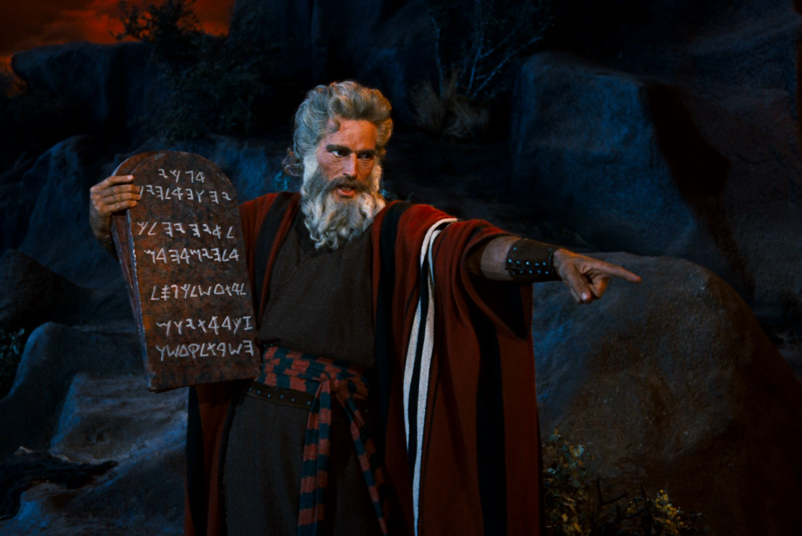

Starting off with my most valuble trait i would have to say my creative mind i've always considered myself very creative, not just in a artistic form but with my daily life whether that may be working on a group project or just comming up with the most bizzar movies or story ideas.
I really like helping others however that may be from something as simple as helping a fellow student find their classroom or just helping someone with an assignment they may not fully understand. I find joy in making someones day a little better.
They say "curiosity killed the cat" but i find being curious as something valuble when done correctly and appropriately i would say my curiosity steams from me wanting to learn more about a certain topic or just beging up to date with todays Socity.

When it comes to my role model or someone who has inspired me, i have quite alot of people in mind, some factual and some fictional. however the one person who has stood out the most would have to be Moses from the Bible. Seeing how Moses got transformed into a man who thought himself not capable to a man that God personally chose to lead his people out of Egypt. Just seeing how much trails and struggles Moses endured throughout his journey was quite impressive. his story has remaind one of my most favourite stories from the Bible giving me inspiration whenever i doubt myself not worth or uncapable.
The statement “LLMs such as ChatGPT, Claude, and CoPilot must be used as a tool not a crutch” has many diffrent meanings and oppinions depending on the indiviual and how it is being used. For me personally it means that LLMs should be used in a manner which is both ethical and mornally correct no matter the usage.In my own personal opinion LLMs shoudn't be used in a manner to make or create a short cut which can negatively effect the job market or ordinary individual instead it should be used as an assistance to help inprove the flow of work in these areaas.
LLMs should be used to help us. With the aproprate measures LLMs can be used in many productive ways to enhance our daily lifes some examples of this are improve learning experinece for students in both lower and higer levels increase flow in processing large amounts of data for companies. assisting in the health field etc. LLMs can be helpful to make complex task mangabale but shouldn't be depended on to do everything for us.